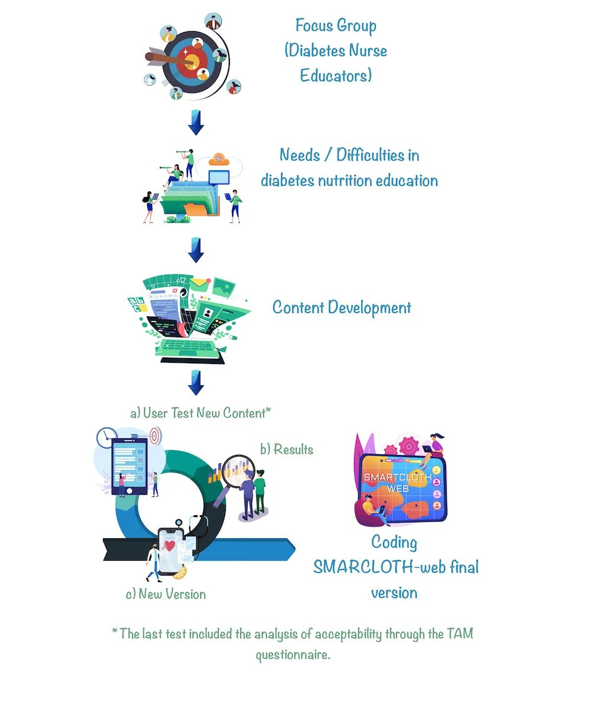
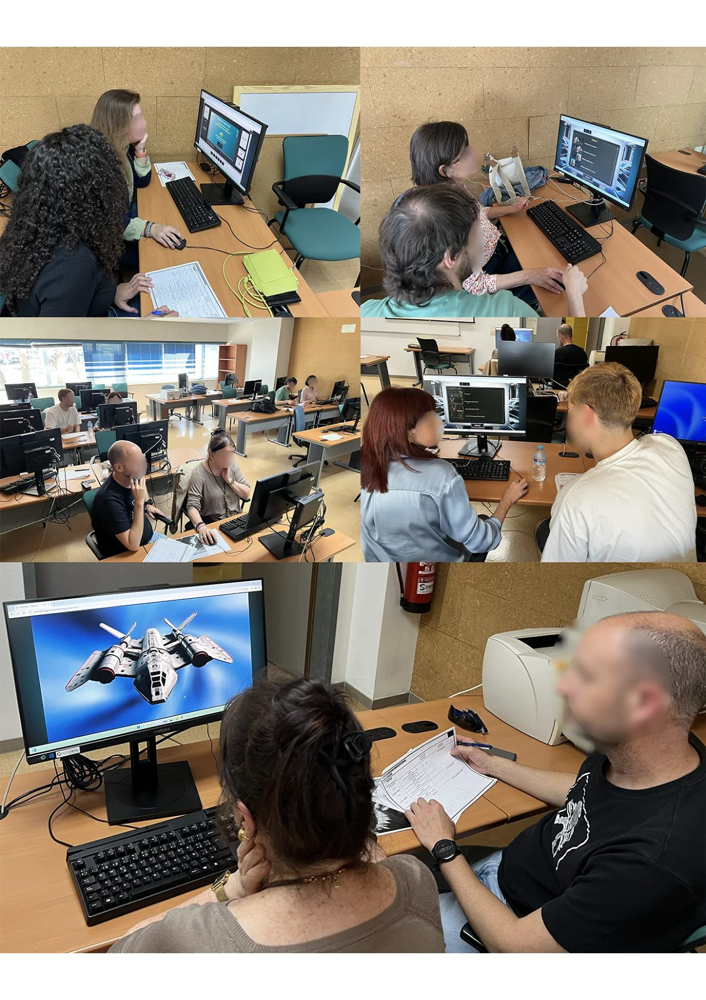
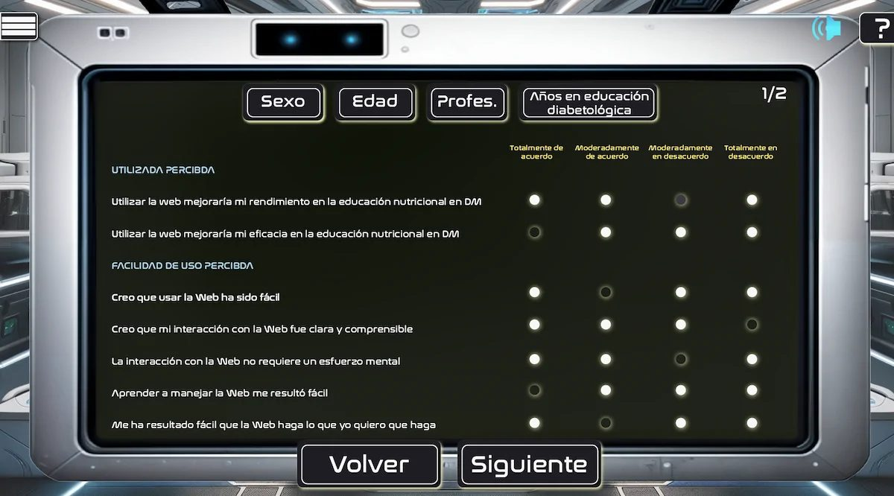
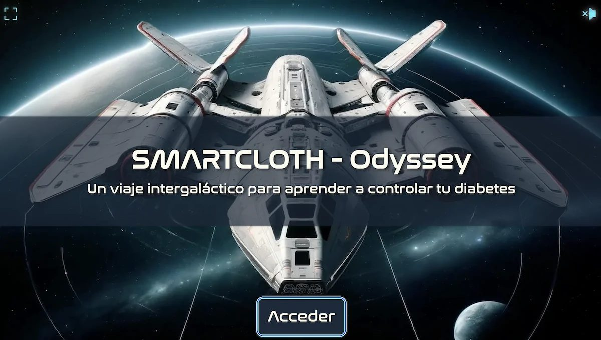
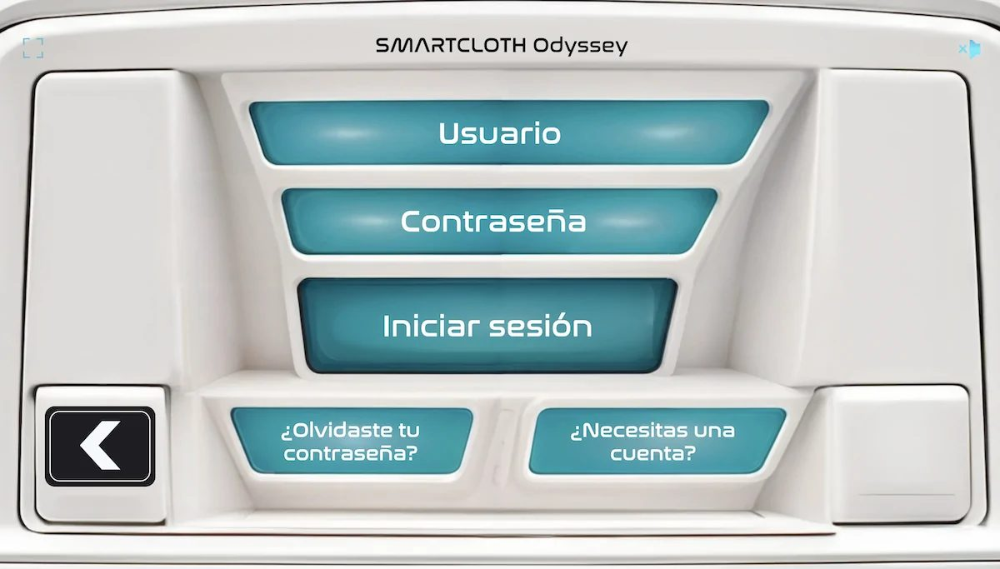
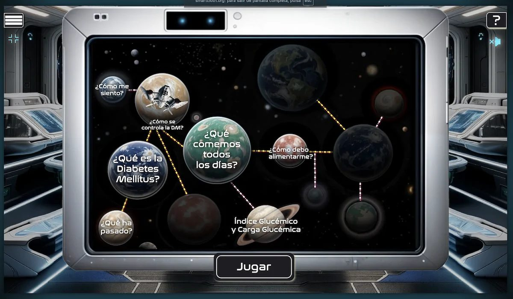
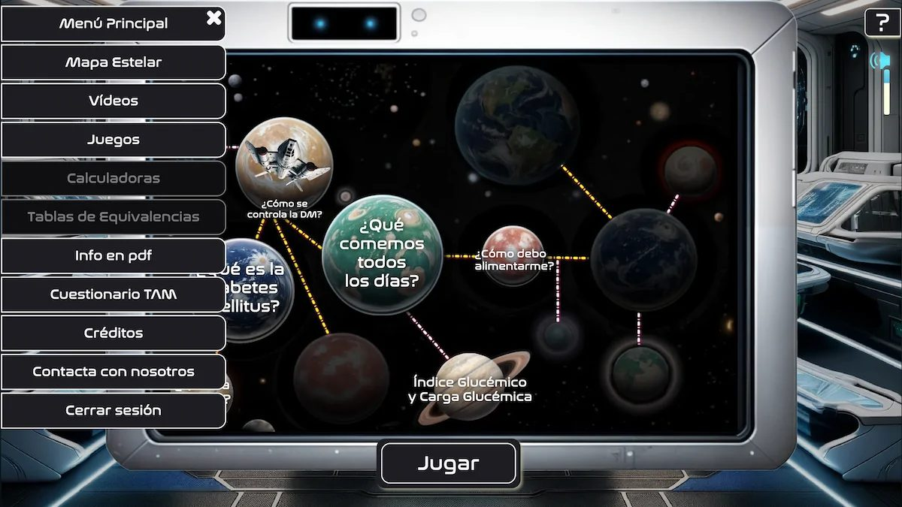

Как геймификация помогает подросткам с диабетом считать углеводы


Диабет 1 типа требует от подростков ежедневного подсчета углеводов, что часто вызывает стресс и трудности с обучением. Исследователи разработали веб-платформу SMARTCLOTH-Odyssey, используя подход человеко-ориентированного дизайна. Инструмент превращает скучные инструкции в интерактивный процесс, который высоко оценили медицинские специалисты.
Главное
- 97,5% специалистов подтвердили, что платформа облегчает обучение пациентов подсчету углеводов.
- Методология HCD позволила создать интуитивно понятный интерфейс, адаптированный под нужды подростков.
- 90% опрошенных медсестер готовы использовать SMARTCLOTH-Odyssey в своей клинической практике.
Подробнее
В основе разработки лежит методология человеко-ориентированного дизайна (HCD), которая ставит потребности конечного пользователя во главу угла. В ходе исследования специалисты провели фокус-группы с участием медсестер, чтобы выявить барьеры в обучении. Выяснилось, что традиционные материалы часто перегружены информацией и не учитывают эмоциональное состояние подростков при постановке диагноза. Платформа была создана на фреймворке React, что обеспечивает адаптивность интерфейса для смартфонов и компьютеров.
В тестировании приняли участие 40 профессионалов, включая медсестер и педиатров. Оценка проводилась по модели принятия технологий (TAM), которая измеряет воспринимаемую полезность и простоту использования. Результаты показали, что 97,5% участников считают платформу эффективным инструментом для обучения, а 90% выразили готовность внедрить её в свою ежедневную практику. Использование игровых механик помогает снизить когнитивную нагрузку и повысить вовлеченность пациентов в процесс контроля гликемии.
Ограничения
Исследование оценивало только мнение медицинских специалистов, а не непосредственные клинические показатели здоровья пациентов.
Полный перевод статьи
Резюме
Сахарный диабет 1 типа (СД1) — хроническое аутоиммунное заболевание, которое, несмотря на то, что составляет лишь 10% всех случаев диабета, характеризуется высокой распространенностью среди детей и подростков. Его дебют является серьезным испытанием как для пациента, так и для его семьи. В Испании более 30 000 детей в возрасте до 15 лет живут с этим диагнозом, при этом заболеваемость растет на 17 случаев на 100 000 детей в год, а Андалусия входит в число регионов с самыми высокими показателями. Метаболические эффекты СД1 хорошо изучены, однако психосоциальный аспект в момент постановки диагноза часто остается без должного внимания. Семьи внезапно сталкиваются с необходимостью освоения гликемического контроля, введения инсулина и, что наиболее важно, ежедневного управления питанием с помощью метода подсчета хлебных единиц. Этот процесс происходит на фоне высокого эмоционального напряжения, страха, чувства вины и информационной перегрузки. Первые моменты после дебюта заболевания критически важны: в это время закладываются основы лечения и формируется характер отношений между пациентом, семьей и системой здравоохранения. Именно здесь возникают образовательные барьеры: трудности с усвоением технических концепций, низкая нутритивная грамотность, недостаточная приверженность подсчету углеводов и ограниченный набор инструментов, адаптированных к реальным возможностям семей.
Важно
Управление СД1 в педиатрии требует обучения подсчету углеводов для коррекции доз инсулина, однако существующие образовательные материалы часто не учитывают эмоциональный стресс семей в период дебюта заболевания.
Одной из основ управления СД1 является обучение диетотерапии на основе подсчета углеводов. Этот подход требует расчета потребления углеводов на каждый прием пищи и коррекции доз инсулина короткого действия в зависимости от гликемического профиля и физической активности. Хотя существуют традиционные учебные пособия, многие из них не подходят для условий стресса, который испытывают семьи при дебюте болезни. Несмотря на достижения в инсулинотерапии и диабетических технологиях, современные клинические рекомендации делают упор на индивидуализированный подход, а не на жесткие диетические ограничения. Тем не менее, эти стратегии внедрены не повсеместно, и многие пациенты по-прежнему полагаются на подсчет углеводов как на базовый инструмент контроля гликемии. Недавние исследования показывают, что даже в развитых системах здравоохранения существуют структурные недостатки в предоставлении диабетического образования, адаптированного к жизненному и культурному этапу пациента. Низкая приверженность диетическим рекомендациям объясняется не отсутствием знаний, а разрывом между образовательными инструментами и опытом пользователей. Этот разрыв усугубляется в цифровой среде: семьи привыкли к интуитивно понятным, интерактивным и геймифицированным технологиям, тогда как многие образовательные программы предлагают жесткие, однонаправленные и непривлекательные учебные планы. Кроме того, медсестры-педагоги отмечают нехватку специфических цифровых материалов, которые можно интегрировать в рутинный уход за детьми и подростками.
Учитывая эту реальность, человеко-ориентированное проектирование (Human-Centered Design, HCD) представляет собой методологическую альтернативу для решения сложных проблем здравоохранения с помощью технологических решений, адаптированных к потребностям конечного пользователя. HCD характеризуется тремя принципами: глубокая эмпатия к пользователю, непрерывная итерация с его активным участием и функциональный дизайн, адаптированный к реальным условиям. Этот подход отходит от классических моделей, где пациент является пассивным получателем информации, делая его соавтором процесса — от фазы исследования до финальной валидации. Данный метод доказал эффективность в интервенциях, требующих изменения поведения, таких как питание или самоконтроль при хронических заболеваниях. Используя такие инструменты, как карты эмпатии, быстрое прототипирование и совместное творчество с практиками, HCD обеспечивает создание более удобных, эмоционально приемлемых и устойчивых продуктов. В этом контексте данное исследование направлено на описание процесса проектирования и оценки SMARTCLOTH-Odyssey — веб-платформы, предназначенной для поддержки медсестер-педагогов в обучении нутритивной терапии при СД1 с поздним дебютом (у подростков).
В данном исследовании использовался смешанный последовательный методологический подход, основанный на принципах HCD и процессе итеративного непрерывного совершенствования. Разработка платформы была структурирована в три фазы: первая — качественное исследование через фокус-группы; вторая — проектирование и функциональное прототипирование с тестированием; третья — оценка воспринимаемого принятия цифрового инструмента медсестрами-педагогами (Рис. 1). В начальной фазе были собраны мнения медицинских специалистов с опытом работы в области диабетического образования при дебюте СД1. Эти данные легли в основу функционального дизайна, который уточнялся через реализацию прототипа и итеративный пересмотр. Параллельно планировалась оценка, сфокусированная на двух ключевых аспектах: юзабилити и технологическое принятие платформы.
Пояснение
HCD (Human-Centered Design) — метод проектирования, при котором потребности и опыт конечного пользователя (в данном случае — семей с детьми с СД1 и медсестер) ставятся во главу угла на всех этапах разработки.
Первая фаза исследования приняла качественный подход, основанный на онлайн-фокус-группах, для глубокого изучения опыта, восприятия и потребностей медсестер-педагогов, работающих в различных провинциях Андалусии (Испания). Этот подход был необходим для того, чтобы последующая разработка программы обучения основывалась на реалистичном понимании клинических условий, в которых происходит обучение нутритивной терапии на ранних стадиях СД1. Две сессии фокус-групп были проведены 6 и 7 марта 2024 года посредством видеоконференции. В сессиях приняли участие медсестры с разным уровнем профессионального опыта, активно занимающиеся обучением в области педиатрического диабета (Таблица 1). Сессии были записаны на видео и полностью транскрибированы с соблюдением этических принципов конфиденциальности: персональные данные и высказывания были анонимизированы и закодированы для последующего качественного анализа. Выборка была целенаправленной для обеспечения территориального и профессионального разнообразия.
Таблица 1. Участники фокус-групп. Кодовое имя / Возраст (лет) / Опыт педагога (лет) / Провинция N1 / 61 / 10 / Кордова N2 / 56 / 6 / Альмерия N3 / 40 / 1 / Кадис N4 / 36 / 2 / Хаэн N5 / 44 / 3 / Малага N6 / 37 / 2 (также нутрициолог) / Севилья
Группы были структурированы вокруг общего сценария, разработанного на основе целей проекта и концептуальной базы HCD. Сценарий включал открытые вопросы, сгруппированные по четырем аналитическим измерениям: (1) опыт использования образовательных инструментов, включая технологические (цифровые книги, приложения, платформы); (2) восприятие наиболее и наименее эффективных инструментов с точки зрения медсестры, пациента и семьи; (3) личные критерии выбора образовательных ресурсов (технические, коммуникативные, эмоциональные аспекты); (4) понимание потребностей пациентов и их опекунов, особенно в контексте дебюта нутритивной терапии и приверженности лечению. Собранные данные были транскрибированы дословно и проанализированы с использованием стратегии тематического категориального кодирования. Этот подход позволил выявить как общие, так и расходящиеся паттерны среди участников и послужил основой для дизайна цифровой платформы. Сбор данных продолжался до достижения тематического насыщения. Анализ проводился независимо двумя исследователями, расхождения разрешались путем обсуждения.
После начальной фазы исследования была организована сессия совместного творчества с участием 2 медсестер-педагогов, 1 врача-педиатра-эндокринолога, 2 веб-разработчиков и 1 преподавателя университета с опытом в научном образовании. В этом пространстве были определены содержательные блоки и педагогический нарратив платформы, структурированные в прогрессивные модули обучения. В апреле 2024 года предложенная структура и контент были представлены участвующим медсестрам, которые валидировали их и предложили рекомендации по улучшению. Затем были организованы три рабочие группы для сотрудничества по педагогическому и техническому обзору контента. Впоследствии проводилось последовательное продвижение в графическом дизайне и программировании платформы. После реализации функциональной версии SMARTCLOTH-Odyssey были проведены три сессии структурированного тестирования на разных этапах временной шкалы: (1) 24 октября 2024 г.: участие медсестер-педагогов; (2) 20 марта 2025 г.: участие студентов-медсестер, прошедших курс по нутритивной терапии и диабетическому образованию; (3) 15 мая 2025 г.: участие медсестер и педиатров для обеспечения более клинического и интегративного взгляда (Таблица 2).
Таблица 2. Участники сессий тестирования. Сессия / Кодовое имя / Возраст / Опыт / Провинция 24 окт 2024 / N7–N11 / 36–56 / 3–15 / Кадис, Кордова, Альмерия, Севилья, Хаэн 20 марта 2025 / NS1–NS7 / 18–20 / Н/Д / Севилья, Кордова, Уэльва, Хаэн 15 мая 2025 / N11–N20, P1–P2 / 34–59 / 3–37 / Уэльва, Кордова, Кадис, Альмерия, Хаэн
В мартовской сессии участвовали молодые студенты, чтобы получить представление, близкое к конечным пользователям (подросткам), обладающим высокой цифровой грамотностью. Платформа была разработана с использованием React (Meta Platforms, Inc) — JavaScript-фреймворка, поддерживающего адаптивный дизайн для настольных компьютеров, планшетов и смартфонов. Тестирование проводилось преимущественно в среде настольных компьютеров для облегчения записи экрана и сбора структурированных данных наблюдений с использованием протокола «мыслей вслух» (think-aloud). В ходе сессий использовались сетки анализа юзабилити с блоками объективной оценки и качественного наблюдения. Анализировались такие элементы, как общее понимание среды, легкость выполнения задач, взаимодействие с меню, контентом и мультимедиа, спонтанные реакции, предложения и трудности. Предложенные задачи включали создание профиля, доступ к геймифицированному контенту, просмотр видео, ответы на вопросы и прохождение видеоигр. Метод «мыслей вслух» позволил выявить области трения, путаницы или перегрузки, а также валидировать элементы, вызывающие мотивацию или удовлетворение.
В конце последней сессии участники заполнили опросник модели принятия технологий (TAM), адаптированный для веб-платформы. Версия была основана на оригинальном предложении Дэвиса и его последующем расширении, адаптированном и валидированном для конкретного контекста проекта. Опросник оценивал следующие измерения: (1) воспринимаемая полезность, (2) воспринимаемая простота использования, (3) отношение к использованию и (4) намерение использовать. Ответы интерпретировались с использованием шкалы Лайкерта с четырьмя уровнями согласия с утверждениями.
Аналитический подход исследования объединил качественные и количественные методы для обеспечения всестороннего понимания поведения, опыта и принятия пользователями платформы SMARTCLOTH-Odyssey. Качественные данные (транскрипты фокус-групп и тестирование «мыслей вслух») подверглись тематическому контент-анализу. Метод «мыслей вслух» позволил в режиме реального времени зафиксировать рассуждения, трудности, сомнения или суждения, выраженные участниками в процессе взаимодействия с инструментом. Аудиозаписи были транскрибированы и анонимизированы, а вербализации закодированы и классифицированы по категориям, связанным с пониманием, навигацией, воспринимаемой полезностью, технологическими барьерами и предложениями по улучшению веб-сайта. Для количественных данных применялась описательная статистика: качественные переменные выражались в абсолютных и относительных частотах, количественные — через меры центральной тенденции и дисперсии (медиана и межквартильный размах, IQR). Для оценки технологического принятия платформы ответы интерпретировались с использованием шкалы Лайкерта, при этом изучались процентные доли ответов для каждого уровня. Эта классификация позволила объективно определить уровень принятия платформы и сопоставить его с качественными наблюдениями.
Исследование проводилось в соответствии с действующими нормами Испании, касающимися исследований с участием людей, с соблюдением положений Органического закона 3/2018 от 5 декабря о защите персональных данных и гарантии цифровых прав. Также соблюдались фундаментальные этические принципы, содержащиеся в Хельсинкской декларации, Конвенции Совета Европы о правах человека и биомедицине, а также Всеобщей декларации ЮНЕСКО о геноме человека и правах человека (1997). Клинические или чувствительные данные участников не собирались, так как деятельность была сосредоточена исключительно на анализе юзабилити и оценке технологического принятия. Учитывая, что во время сессий тестирования велась видео- и аудиозапись, все участники подписали форму информированного согласия и специальную форму согласия на передачу прав на изображение. Исследование является частью более широкого проекта по разработке технологических решений SMARTCLOTH, который получил этическое одобрение Комитета по этике исследований провинции Кордова (Comité de Ética de la Investigación Provincial de Córdoba), аффилированного с Советом Андалусии (Junta de Andalucía – Consejería de Salud y Consumo), на заседании номер 361, состоявшемся 24 апреля 2024 года. Участники не получали финансовой компенсации за участие.
Две фокус-группы объединили в общей сложности 6 медсестер-педагогов из разных провинций Андалусии. Дискуссии были свободными, обширными и богатыми нюансами, что предоставило исследовательской группе детальный обзор реальной образовательной практики при дебюте педиатрического СД1 (Таблицы 3 и 4).
Таблица 3. Распределение образовательного контента по планетам SMARTCLOTH-Odyssey. Планета / Контент / Геймификация Newland / Введение в СД1, определение гликемии и гипергликемии, симптомы / Нет Diabion / Что такое СД1? Энергетическая роль глюкозы, метаболизм, инсулин / Вопросы и ответы Glucopolis / Управление диабетом: питание и инсулин / Локализация органов, лабиринты, алфавитный суп Gluconebula / Эмоциональные аспекты СД1 / Нет Alimentarium / Идентификация макронутриентов в продуктах / Перетаскивание (Drag and drop) Dexteria Prime / Гликемический индекс и нагрузка / Викторина Platopia / Выбор продуктов, частота, размеры порций / Перетаскивание на «здоровую тарелку» Racionix / Расчет хлебных единиц / Примеры блюд с калькулятором Gluconix / Интерпретация этикеток / Примеры этикеток с калькулятором On the way home / Повторение материала / Рандомизированные вопросы Earth / Составление меню и подсчет порций / Перетаскивание для создания меню
Таблица 4. Резюме информации, извлеченной из фокус-групп. Категория / Основная информация Разнообразие материалов / Практики используют разные ресурсы без общего стандарта. Эмоциональные барьеры / Дебют сопровождается сильным эмоциональным воздействием, затрудняющим обучение. Потребность в гомогенизации / Необходимо объединение и систематизация существующих надежных материалов. Оценка цифровых инструментов / Участники ценят технологии и игры как инновационную поддержку.
Одним из очевидных выводов стало большое разнообразие и качество материалов, используемых практиками. Хотя все согласились с важностью обучения диете с подсчетом порций, формы и ресурсы были неоднородными. N2 отметил: «Если они умеют читать этикетки и знают правила пропорций, я не объясняю больше, если нет — советую скачать калькулятор HC». N3 и N6 выделили технологические инструменты, такие как La Mesa Azul, которые хорошо воспринимаются семьями. Этот вывод подчеркивает сквозной паттерн: информация качественная, но широко рассеянная, что препятствует гомогенному обучению.
Все участники указали на эмоциональный вызов обучения семей в момент постановки диагноза. Предоставление большого объема информации сразу воспринимается как источник стресса. N6 поделился: «Я нахожу это утомительным... Они приходят перегруженными. Мы говорим: «Не волнуйтесь...»». N5 отметил: «Это сложная часть, вызывающая много отторжения... подсчет порций. Это генерирует много путаницы и неуверенности». Некоторые участники выразили нежелание использовать материалы из-за их устаревания (например, данные 2018 года) или недоверия к надежности некоторых приложений, использующих камеру телефона для оценки порций.
Одним из самых четких консенсусов была потребность в инструменте, который служит повседневной, доступной, общей и надежной базой. N3 заявил: «В конечном итоге нам нужно достичь консенсуса, чтобы все материалы, которые мы используем, были согласованы». Эта потребность в гомогенизации без жесткости была постоянной, подчеркивая возможность улучшения равенства в образовательном уходе после дебюта СД1.
Восприятие цифровых инструментов было благоприятным, особенно в отношении подростков. N6 отметил: «В XXI веке мне стыдно раздавать распечатанный PDF... Если с мобильного телефона можно видеть, что происходит в саду из Китая, то решения, которые мы даем, доисторические». N5 добавил: «Полезным ресурсом было бы мощное, хорошо сформированное приложение для подсчета порций».
Анализ выявил: (1) существует богатство ценной информации; (2) она широко рассеяна и не структурирована; (3) каждый медработник использует свои методы, что ведет к неравенству; (4) существует потребность в стандартном цифровом инструменте, объединяющем ключевой контент в дидактической и адаптируемой форме.
После анализа фокус-групп было решено, что визуальный дизайн будет следовать космической тематике. Исследовательская группа сочла, что подход, избегающий чрезмерно детских элементов, более уместен для клинических условий при работе с подростками. Платформа получила название SMARTCLOTH-Odyssey. Нарратив состоит из межгалактического путешествия, в котором герой должен собрать части своего корабля, чтобы вернуться домой. Контент представлен через короткие видео с закадровым голосом и субтитрами. Доступ к каждой планете открывается только после прохождения предыдущего блока, что обеспечивает последовательное обучение. В апреле 2024 года была проведена сессия валидации с медсестрами, которые положительно оценили предложение, рекомендовав заменить формулировку «опасность, маркировка питания» на «внимание, маркировка питания» из-за негативной коннотации.
Первый тест в октябре 2024 года с ранней версией платформы (планеты Newland и Diabion) позволил выявить проблемы: пользователи пытались войти без регистрации, возникали трудности с поиском иконки звука. В целом, медсестры не сообщили о значительных трудностях в навигации и положительно оценили потенциал инструмента.
Второй тест в марте 2025 года включал планеты Newland, Diabion, Glucopolis, Gluconebula и Alimentarium. Были внесены коррективы: сокращена длина видео, модулирована громкость музыки. Тестирование со студентами-медсестрами позволило оценить юзабилити с точки зрения цифровой грамотности. Было выполнено 54 специфических задачи, в ходе которых наблюдалось большее количество инцидентов из-за внедрения более сложных функциональностей.












Схема исследования
Статья опубликована в рецензируемом журнале JMIR diabetes. Но и опубликованный результат — одно исследование, а не окончательный вывод.
Источник
| Источник | Категория | Лицензия |
|---|---|---|
| JMIR diabetes (Europe PMC) | micronutrients | CC BY 4.0 |
Источники
| Источник | Ссылка |
|---|---|
| Страница статьи | europepmc.org |
| Полный текст (PDF) | europepmc.org |
| DOI | doi.org |
| Метаданные Crossref | api.crossref.org |
| Europe PMC | europepmc.org |